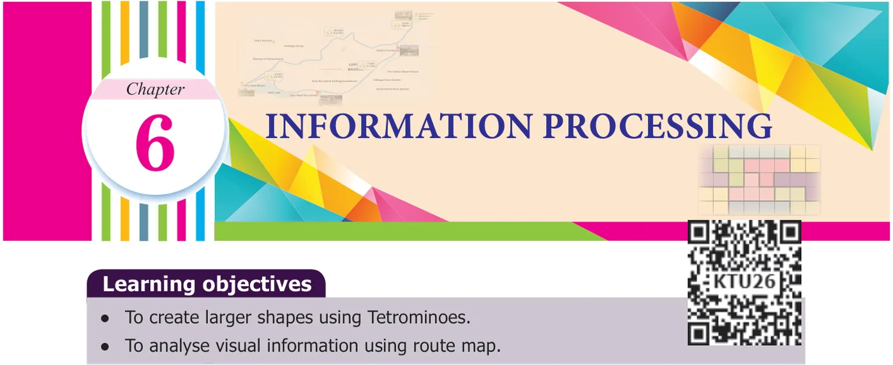
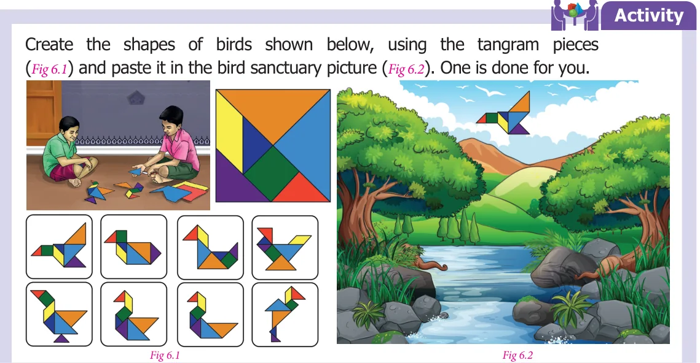
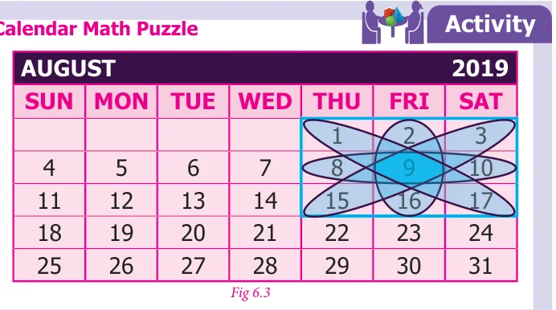
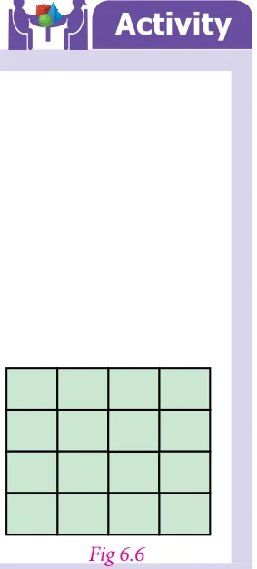
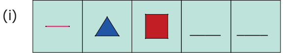
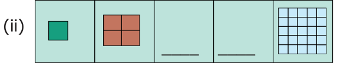

Recap
The activities given below, help us to recall sorting and arranging information that we studied in class VI.


Discuss the properties of numbers circled in the shaded shape shown in the calender. Identify more such shapes.

- 1.Complete the given sequence.


- 2.Find the number of all possible squares that can be formed
from the Fig. 6.6.